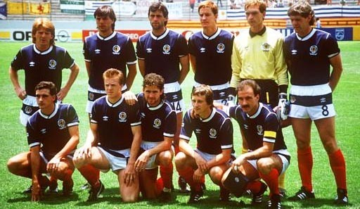

Chương 17

au khi Scotland dễ dàng vượt qua Australia, Alex đau đầu trong việc lên danh sách đi Mexico. Trên hàng tiền đạo, một suất đương nhiên thuộc về Kenny Dalglish, nhưng ai sẽ đá cặp với anh đây? Ngoài “Vua Kenny” đứng trên cao, một mình một cõi, Scotland có cả lố tiền đạo sàng sàng như nhau: Steve Archibald, Mark McGhee, Andy Gray, Mo Johnston, Ally McCoist, Brian McClair…Chẳng biết phải chọn ai! Dưới hàng thủ còn khó nghĩ hơn gấp bội. Willie Miller và Alex McLeish là cặp trung vệ số một của Aberdeen và tại giải ngoại hạng Scotland, bê nguyên họ vào đá chính cho ĐTQG là nhất cử lưỡng tiện. Nhưng nếu như thế thì đặt Alan Hansen, trung vệ thủ quân của Liverpool, vào đâu? Một ngôi sao như Hansen chắc chắn không chấp nhận ngồi ghế dự bị.
Suy đi tính lại, Alex quả quyết gạch tên Hansen. Ông chỉ lo nếu Hansen bị loại, Kenny Dalglish sẽ không để yên. Nên biết rằng Dalglish và Hansen là đôi bạn chí thân. Khi lên nắm quyền tại Liverpool, việc đầu tiên Dalglish làm là trao băng thủ quân cho bạn. Ở đội tuyển Scotland, Dalglish có sức ảnh hưởng cực lớn. Ngay lúc còn sống, Jock Stein cũng phải kiêng nể anh vài ba phần. Nếu làm mất lòng Dalglish, đại sự sẽ hỏng bét.
Phân vân mãi, cuối cùng, Alex quyết định gọi cho Dalglish, thông báo ý định loại Hansen.
“Không thể nào”, Dalglish ngạc nhiên, “Alan là cầu thủ giỏi cơ mà”.
“À…ừ… để anh nghĩ lại xem sao.”
Alex chẳng nghĩ gì cả, ông nói vậy chỉ để tỏ lòng tôn trọng Dalglish. Một lúc sau, ông nhấc máy gọi lại:
“Rất tiếc, anh không thể giữ Hansen.”
“Thôi được! Anh là HLV, quyết định nằm trong tay anh.”
Không cần phải nói, tin Hansen bị loại gây nên chấn động: Sao lại như thế? Đội trưởng của Liverpool không đủ chuẩn lên tuyển? Không thể tin được! Nhưng Alex có lý do của mình. Hansen dường như chưa bao giờ thiết tha với việc bảo vệ màu cờ sắc áo: Những khi được gọi tập trung, anh thường viện cớ chấn thương để xin về. Thêm vào đó, tuy xuất sắc ở Anfield, Hansen không mấy nổi trội trong màu áo Scotland.
Mười ngày sau vụ Hansen, đến lượt Kenny Dalglish xin rút vì chấn thương. Ngay lập tức rộ lên tin đồn: Dalglish bỏ đội thực chất là để phản đối Alex Ferguson. Song Cúp Thế Giới là ước mơ của mọi cầu thủ. Thật khó tin Dalglish có thể hy sinh World Cup chỉ vì Alan Hansen. Bản thân Dalglish cũng phủ nhận tin đồn trên. “Tôi bị đứt nửa cái dây chằng gối”, anh kể lại trong hồi ký, “Dù Hansen có được gọi, tôi cũng chỉ ngồi nhà xem TV thôi.”
Thiếu vắng ngôi sao sáng nhất, tuyển Scotland lại xui xẻo rơi đúng vào bảng tử thần của World Cup 1986, chạm trán cùng Tây Đức, Uruguay và Đan Mạch.“Đại Bàng”
Đức mạnh như thế nào, không cần phải nhắc. Uruguay tuy kém hơn, nhưng lại có lối chơi thô bạo, chém đinh chặt sắt cực kỳ khó chịu. Đội hình của họ gồm 10 anh đồ tể, cộng thêm chàng lãng tử hào hoa Enzo Francescoli. Đan Mạch thì vừa gây ấn tượng mạnh tại Euro 1984. “Những chú lính chì” là một trong những đội có lối chơi đẹp nhất hoàn cầu, với những trụ cột như “bò mộng” Preben Elkjaer Larsen, Quả Bóng Vàng Châu Âu Allan Simonsen, và đặc biệt là chàng trai trẻ với kỹ thuật siêu quần bạt tụy Michael Laudrup.
Ngay trận đầu tiên ở Mexico, Scotland đã không may. Họ chơi không tồi, nhưng bị trọng tài tước mất một bàn thắng hợp lệ. Larsen ghi bàn duy nhất ở phút 57, đem về hai điểm cho Đan Mạch. Trận thứ hai gặp Đức, đội không được phép thua. Trong buổi tập trước trận, Alex Ferguson ra lệnh phong tỏa sân tập, nội bất xuất, ngoại bất nhập. Ông tung tin hỏa mù rằng Gordon Strachan không đủ thể lực để ra sân, nên không muốn thám báo của Đức dò biết được sự thật. Song “Đại Bàng” dễ gì thua cuộc. Trợ lý tuyển Đức Berti Vogts đứng rình ngay trước SVĐ. Đến khi nhân viên của hãng Coca Cola chuẩn bị đem nước vào cho cầu thủ, Vogts nhảy ra, xin đổi áo mũ với nhân viên này, rồi đường hoàng đẩy xe vào trong. Bao nhiêu “bài” của Alex thế là lộ cả.Scotland rốt cuộc thua khít khao 1-2.Tuy liên tiếp thất bại, các chàng trai Tô Cách Lan vẫn còn cơ hội vào vòng trong, nếu thắng Uruguay trong trận cuối cùng.
Gặp Uruguay, Scotland không có được đội hình mạnh nhất. McLeish buộc phải ngồi ngoài do bị cúm. Cho rằng Souness đã kiệt sức sau hai trận căng thẳng trước đó, Alex cũng cho anh nghỉ, đồng thời dùng Sharp thay cho Archibald trên hàng tiền đạo. Trận đấu khởi đầu vô cùng thuận lợi cho Alex và học trò, khi Jose Batista của Uruguay lãnh thẻ đỏ ngay giây thứ 40, sau pha phạm lỗi thô bạo với Gordon Strachan. Bị mất người, các cầu thủ Uruguay (trừ Francescoli) vốn đã đá rắn, lại trở nên rắn hơn bao giờ hết. Họ cũng sử dụng đủ trò tiểu xảo: Hễ thấy trọng tài quay lưng đi là kéo tóc, bạt tai, hoặc đấm vào mặt cầu thủ đối phương. Lúc gần hết hiệp hai thì họ liên tục giả vờ chấn thương để câu giờ. Trận đấu kết thúc với tỷ số 0-0. Uruguay vào tiếp vòng 1/16, nhưng bị FIFA phạt tiền và dọa đuổi khỏi giải nếu còn đá “láo”!
Tiên trách kỷ, hậu trách nhân. Dù cho đối thủ đá láo, Scotland không thành công trước tiên là do chính họ. Bản thân Alex đứng ra nhận trách nhiệm. Ông thừa nhận mình chỉ nói những điều tầm phào, vô thưởng vô phạttrong buổi nói chuyện trước giờ ra sân, do đó không kích động được tinh thần cầu thủ. Ông cũng cho rằng lẽ ra không nên cất Souness và Archibald trên ghế dự bị. Sharp là một tiền đạo có lối chơi dũng mãnh, Alex sử dụng Sharp thay Archibald, với hy vọng anh có thể “lấy lửa chọi lửa” với đối thủ. Không ngờ khi ra sân, Sharp lại “tắt điện”, và bị các hậu vệ Uruguay hiếp đáp từ đầu tới cuối.
Đánh giá một cách khách quan, nhiệm kỳ ngắn ngủi của Alex Ferguson ở đội tuyển Scotland tuy không thành công, nhưng cũng chẳng đến nỗi thất bại. Quan trọng là vào được World Cup, còn ra về sau vòng một là…chuyện thường ngày ở huyện. Suốt lịch sử dự World Cup, trước và sau 1986, Scotland chưa một lần vào nổi vòng hai.
Trong thời gian ở Mexico, Alex có dịp hội kiến cùng cựu danh thủ Manchester United Bobby Charlton. Khi từ giã, Charlton bắt tay ông và dặn “Một ngày nào đó, nếu anh cảm thấy muốn sang Anh, hãy cho tôi biết.”

ĐTQG Scotland tại World Cup 1986 (Ảnh: Mahjoob.com)